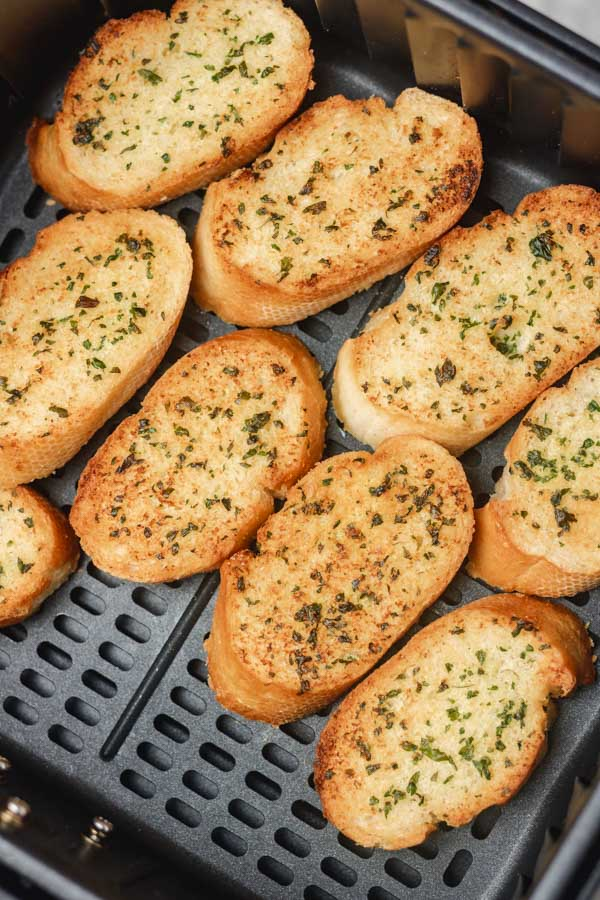

Garlic Bread

Description
A widespread food across Europe, garlic bread is often served with pasta.
Ingredients
- Baguette
- Garlic
- Butter
- Olive oil
- Parmesan cheese
- Parsley
Steps
- Slice the baguette into equal sized pieces
- Add garlic, butter, and olive oil till a paste forms
- Spread the paste on the sliced baguette
- Sprinkle parmesan cheese on top
- Place in air fryer at 320°F for 8 minutes
- Garnish with minced parsley